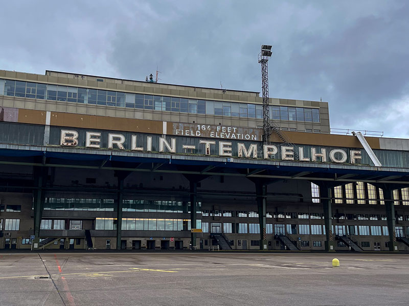
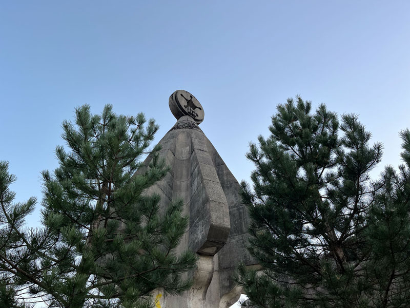
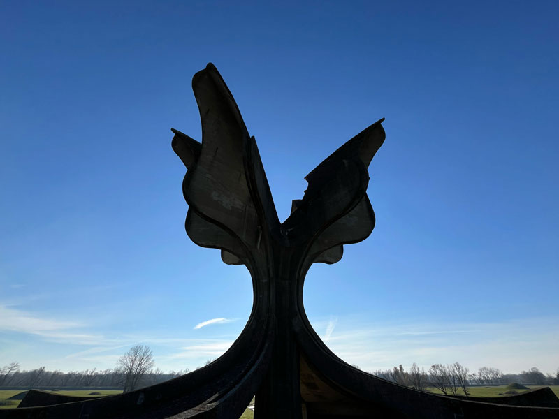
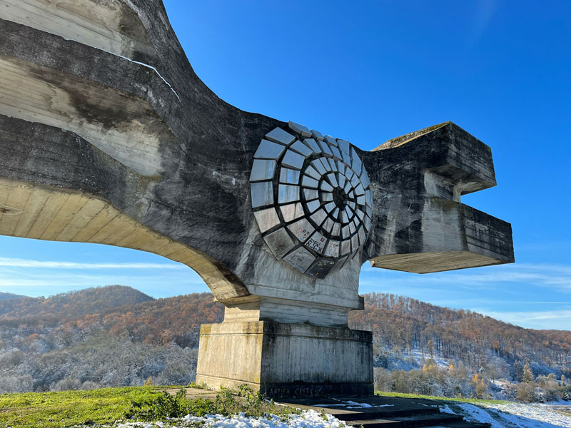

Explorations
7 Germany explorations
14 former Yugoslavia explorations
5 Hungary explorations

Hajmáskér Barracks
Hajmáskér, Hungary

BARS 501
Kálló, Hungary

Kossuth Mozi Cinema
Miskolc, Hungary

Kelenföld Erőmű
Kelenföld, Hungary

Train Graveyard
Istvántelek, Hungary

Neues Lager
Jüterbog, Germany

Flughafen Templhof
Berlin, Germany

Kraftwerk Plessa
Plessa, Germany

Kraftwerk Henningsdorf
Berlin, Germany
Flugplatz Brand
Halbe, Germany

Krampnitz Kaserne
Potsdam, Germany

Kaserne Vogelsang
Zehdenick, Germany
Spaç Prison
Kodër-Spaç, Albania

Monument to the Fallen for Freedom
Godinje, Montenegro
Monument to Fallen Fighters of WWII
Nikšić, Montenegro

Monument to the Fallen Soldiers on Sutjeska
Carine, Montenegro

Memorial to the Fallen of the Lješanska Nahija Region
Barutana, Montenegro

Submarine Bunkers
Luštica, Montenegro

Abandoned Hotels
Kupari, Croatia

Hotel Igman
Gornja Grkarica, Bosnia & Herzegovina

Tito's Bunker
Konjic, Bosnia and Herzegovina

1984 Olympic Bobsled Track
Sarajevo, Bosnia and Herzegovina
Željava Underground Air Base
Željava, Croatia

Monument to the Uprising of the People of Kordun and Banija
Petrova Gora National Park, Croatia
Monument to the Detachment
Novo Selo Palanječko, Croatia

Stone Flower
Podgarić, Croatia

Monument to the Revolution of the People of Moslavina
Jasenovac, Croatia
Created by Luke